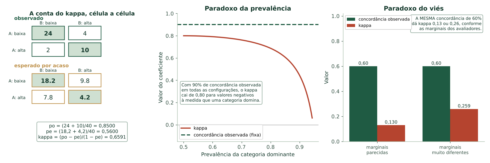
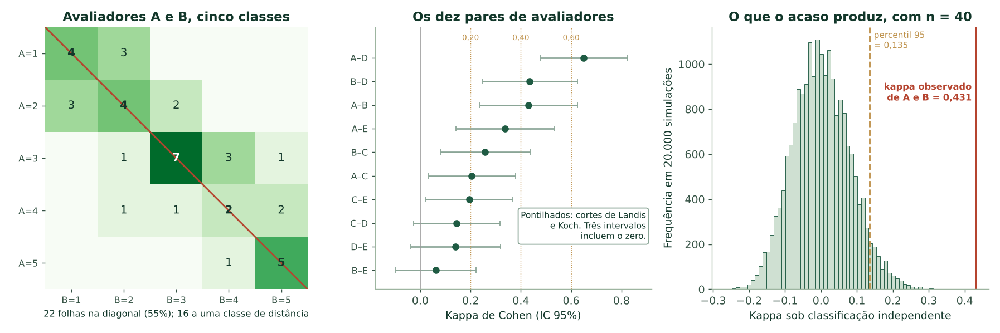

Kappa de Cohen
Mede a concordância entre dois avaliadores em escala nominal, descontando a parcela que o acaso sozinho produziria.
Comece por aqui
Quando dois avaliadores classificam as mesmas unidades, a proporção de vezes em que coincidem é um número fácil de calcular e difícil de interpretar: parte dessa coincidência teria acontecido mesmo se os dois estivessem chutando. O kappa de Cohen desconta essa parte, comparando a concordância observada com a que se esperaria por acaso.
Se os dois avaliadores classificam 90% das unidades da mesma forma, mas o acaso sozinho produziria 82% de coincidência, então eles acertaram juntos apenas 8 dos 18 pontos percentuais disponíveis acima do acaso — e o kappa é 8/18 = 0,444. A disputa toda, nesta ficha, é sobre o que significa "o acaso sozinho".
O que é o kappa
A concordância observada \(p_o\) é a proporção de unidades na diagonal da tabela. A concordância esperada \(p_e\) é calculada supondo que os dois avaliadores classificassem independentemente, cada um com as suas próprias marginais. O kappa é a fração da concordância "disponível" que foi efetivamente alcançada.

Não é uma correlação, embora varie entre −1 e 1. Não é uma probabilidade. Não é comparável entre estudos com prevalências diferentes — e é por isso que reportar o kappa sozinho, sem a tabela e sem as marginais, deixa o leitor sem como julgar o número.
Pressupostos e como verificá-los
| Pressuposto | Por que importa | Como verificar |
|---|---|---|
| Exatamente dois avaliadores | O coeficiente é definido para um par. | Para três ou mais, kappa de Fleiss. |
| Categorias nominais, exclusivas e exaustivas | Cada unidade cai em exatamente uma. | Soma da tabela = n. |
| Os dois avaliadores usam as MESMAS categorias | A tabela precisa ser quadrada. | Confira os níveis dos dois fatores. |
| Unidades independentes | O erro-padrão pressupõe isso. | Delineamento; avaliações agrupadas exigem outro modelo. |
| Avaliações feitas de forma cega e independente | Avaliadores que se consultam inflam a concordância. | Protocolo. |
| Escala sem ordem, ou ordem irrelevante | Com escala ordinal, o kappa desperdiça informação. | Se há ordem, use o kappa ponderado. |
| n suficiente | O IC é largo com n pequeno. | Com n = 40 e cinco classes, o IC tem 0,38 de largura. |
Prevalência: na tabela [[85, 5], [5, 5]], a concordância observada é 90% e o kappa é 0,444 — porque \(p_e = 0{,}82\). Viés: as tabelas [[45, 15], [25, 15]] e [[25, 35], [5, 35]] têm ambas 60% de concordância, e kappas de 0,130 e 0,259. A segunda tem marginais mais discrepantes, e por isso um \(p_e\) menor — o que aumenta o kappa. A recomendação de Byrt, Bishop e Carlin (1993) é reportar o PABAK e os índices de prevalência e de viés ao lado do kappa.
Formulação e cálculo
O kappa é uma medida descritiva, não um teste. Há um teste associado — \(H_0: \kappa=0\) — mas ele raramente interessa: ninguém espera que avaliadores treinados concordem apenas por acaso. O que se reporta é a estimativa com o seu intervalo.
Em que:
- \(p_{ij}\)
- proporção de unidades classificadas na categoria \(i\) pelo primeiro avaliador e \(j\) pelo segundo
- \(p_{i\cdot},\ p_{\cdot i}\)
- marginais de linha e de coluna
- \(p_o\)
- concordância observada
- \(p_e\)
- concordância esperada sob independência
- \(k\)
- número de categorias
Exemplo numérico, passo a passo
| B: baixa | B: alta | Total | |
|---|---|---|---|
| A: baixa | 24 | 4 | 28 |
| A: alta | 2 | 10 | 12 |
| Total | 26 | 14 | 40 |
O erro-padrão é 0,1265, e o intervalo de confiança de 95% vai de 0,411 a 0,907 — largo, como sempre acontece com n = 40.
Em palavras: dos 44 pontos percentuais de concordância disponíveis acima do que o acaso produziria, os dois avaliadores alcançaram 29. A leitura em termos de "quanto sobrou" é a mais honesta do kappa.
Propriedades
- Vale 1 na concordância perfeita e 0 quando a concordância observada iguala a esperada; pode ser negativo, no máximo até \(-1\) em casos extremos.
- Com \(k=2\) e marginais iguais, reduz-se a \(2(p_o-p_e)/(1-p_e)\) e tem interpretação direta como medida de associação.
- Não é invariante à prevalência: a mesma qualidade de avaliação produz kappas diferentes em populações diferentes.
- Para \(p_o\) fixo, o kappa cresce quando as marginais dos dois avaliadores se afastam — que é o paradoxo do viés.
- É o caso \(m=2\) do kappa de Fleiss, embora os dois difiram no cálculo de \(p_e\).
- Pode ser escrito como uma correlação intraclasse sobre as indicadoras das categorias.
- Com escala ordinal, a versão ponderada é sempre preferível: veja o kappa ponderado.
Como interpretar os resultados
| Elemento | O que informa | Cuidado |
|---|---|---|
| value / kappa | A estimativa pontual. | Sem o IC, diz pouco. |
| IC 95% | A precisão. | Com n pequeno, é muito largo. |
| z e p | Teste de κ = 0. | Raramente é a pergunta de interesse. |
| Concordância observada | O dado bruto. | Reporte-a sempre junto. |
| Marginais dos dois avaliadores | Se há viés sistemático. | Marginais discrepantes inflam o kappa. |
| PABAK | 2·po − 1: ignora as marginais. | Útil como contraponto. |
| Índices de prevalência e de viés | Qual dos dois paradoxos está em jogo. | Byrt, Bishop e Carlin (1993). |
A escala de Landis e Koch, e por que desconfiar dela
| Kappa | Rótulo verbal |
|---|---|
| < 0,00 | pobre |
| 0,00 a 0,20 | leve |
| 0,21 a 0,40 | razoável |
| 0,41 a 0,60 | moderada |
| 0,61 a 0,80 | substancial |
| 0,81 a 1,00 | quase perfeita |
Landis e Koch propuseram esses cortes em 1977 sem derivação formal, e eles se espalharam pela literatura. O problema prático é que eles ignoram a precisão: em simulação com n = 40 e cinco categorias, avaliadores que classificam de forma completamente independente produzem kappa acima de 0,20 — o rótulo "razoável" — em cerca de 1% das amostras, com desvio-padrão de 0,08. Um kappa de 0,45 com IC [0,10; 0,80] e outro de 0,45 com IC [0,41; 0,49] recebem o mesmo rótulo e significam coisas muito diferentes.
Como executar no R e em Python
Onde executar o código em Python
Não é preciso instalar nada: o Google Colab é um computador na nuvem, gratuito, que executa Python pelo navegador e já traz as bibliotecas usadas aqui (numpy, scipy e matplotlib).
Há três caminhos no R. irr::kappa2() aceita uma matriz com duas colunas e devolve kappa, \(z\) e valor-p, além de aceitar pesos. vcd::Kappa() trabalha a partir da tabela de contingência e devolve as versões ponderada e não ponderada com confint(). psych::cohen.kappa() dá intervalos por bootstrap e lida bem com categorias ausentes. Para o gráfico, vcd::agreementplot() mostra visualmente quanto da tabela está na diagonal.
library(irr)
kappa2(dados[, c("A", "B")]) # kappa, z e valor-p
library(vcd)
Kappa(table(dados$A, dados$B)); confint(Kappa(table(dados$A, dados$B)))
Exemplo de aplicação
Contexto dos dados
Os dados são fictícios e foram criados pelo autor: 40 folhas de cafeeiro avaliadas quanto à severidade de ferrugem por cinco avaliadores (A a E), em escala ordinal de 1 (ausente) a 5 (muito alta). O mesmo conjunto atravessa as seis fichas de concordância, o que permite ver como cada coeficiente responde à mesma estrutura de desacordo. Dois dos avaliadores foram construídos com defeitos distintos: o C classifica sistematicamente cerca de uma classe acima dos demais, e o E é o mais errático sem ser o mais severo.
Código em R
# Kappa de Cohen: exemplo completo ----
# Pacotes: irr (kappa2), vcd (Kappa com IC), psych, DescTools
# install.packages(c("irr", "vcd", "psych", "DescTools"))
# Dados fictícios: 40 folhas de cafeeiro, severidade de ferrugem de 1 a 5,
# avaliadas por cinco avaliadores. O mesmo conjunto das demais fichas de
# concordância.
sev <- matrix(c(
3,3,4,3,4, 5,4,4,4,5, 4,4,5,3,5, 5,5,5,4,5, 5,5,5,4,3,
1,2,2,1,1, 2,2,3,2,4, 1,2,1,1,1, 3,3,4,3,4, 3,4,5,4,2,
4,3,4,3,4, 3,4,4,3,3, 1,1,1,1,1, 3,3,5,3,3, 2,3,2,2,1,
5,5,5,5,4, 5,5,4,3,5, 4,5,5,4,4, 2,2,5,2,2, 3,4,5,4,3,
4,4,4,4,1, 1,2,3,1,3, 3,3,3,3,3, 2,3,5,2,3, 2,1,2,2,2,
2,1,3,2,3, 3,3,4,3,1, 2,1,1,1,5, 3,2,4,5,4, 1,1,1,1,2,
4,5,5,4,4, 2,2,4,2,1, 1,1,4,1,3, 1,1,2,1,1, 3,3,3,2,3,
3,3,3,3,3, 3,5,4,3,2, 2,2,4,2,1, 4,2,5,4,4, 5,5,5,5,2),
ncol = 5, byrow = TRUE,
dimnames = list(paste0("folha", 1:40), c("A","B","C","D","E")))
head(sev)
apply(sev, 2, function(x) table(factor(x, levels = 1:5)))
colMeans(sev)
# O kappa de Cohen é para DOIS avaliadores e escala NOMINAL.
# Dicotomizando em severidade alta (4 e 5) contra baixa (1 a 3):
alta <- ifelse(sev >= 4, "alta", "baixa")
tab <- table(A = alta[, "A"], B = alta[, "B"])
tab
addmargins(tab)
prop.table(tab)
library(irr)
kappa2(alta[, c("A", "B")]) # kappa, z e valor-p
library(vcd)
Kappa(tab) # kappa não ponderado e ponderado
confint(Kappa(tab)) # intervalos de confiança
# A conta à mão
P <- prop.table(tab)
po <- sum(diag(P)); po
pe <- sum(rowSums(P) * colSums(P)); pe
(po - pe) / (1 - pe)
# Erro-padrão e IC
library(psych)
cohen.kappa(alta[, c("A", "B")])
# Os dois paradoxos de Feinstein e Cicchetti
t_prev <- matrix(c(85, 5, 5, 5), 2, byrow = TRUE) # prevalência extrema
t_vies1 <- matrix(c(45, 15, 25, 15), 2, byrow = TRUE) # marginais parecidas
t_vies2 <- matrix(c(25, 35, 5, 35), 2, byrow = TRUE) # marginais diferentes
sapply(list(t_prev, t_vies1, t_vies2), function(T) {
P <- prop.table(T); po <- sum(diag(P))
pe <- sum(rowSums(P) * colSums(P))
c(po = po, pe = pe, kappa = (po - pe)/(1 - pe), pabak = 2*po - 1,
ip = abs(T[1,1] - T[2,2])/sum(T), iv = abs(T[1,2] - T[2,1])/sum(T))
})
# Todos os pares, na escala completa de cinco classes
pares <- combn(colnames(sev), 2)
res <- t(apply(pares, 2, function(p) {
k <- kappa2(sev[, p])
c(kappa = k$value, z = k$statistic, p = k$p.value,
concordancia = mean(sev[, p[1]] == sev[, p[2]]))
}))
rownames(res) <- apply(pares, 2, paste, collapse = "-")
round(res, 4)
mean(res[, "kappa"]) # kappa de Light
# Gráficos
library(vcd)
agreementplot(tab, main = "Concordância entre A e B")
mosaic(table(A = sev[,"A"], B = sev[,"B"]), shade = TRUE)
A mesma análise em Python, com os resultados
Cole o código em um notebook do Google Colab ↗ e execute com Shift+Enter. Os valores abaixo são a saída desse código.
# Bibliotecas: numpy e scipy (ambas já instaladas no Google Colab)
import numpy as np
from scipy import stats
# ===================================================================
# Dados fictícios, criados pelo autor, compartilhados pelas fichas de
# concordância: 40 folhas de cafeeiro avaliadas quanto à severidade de
# ferrugem por cinco avaliadores, em escala de 1 (ausente) a 5 (muito alta).
# ===================================================================
SEV = np.array([
[3,3,4,3,4],[5,4,4,4,5],[4,4,5,3,5],[5,5,5,4,5],[5,5,5,4,3],
[1,2,2,1,1],[2,2,3,2,4],[1,2,1,1,1],[3,3,4,3,4],[3,4,5,4,2],
[4,3,4,3,4],[3,4,4,3,3],[1,1,1,1,1],[3,3,5,3,3],[2,3,2,2,1],
[5,5,5,5,4],[5,5,4,3,5],[4,5,5,4,4],[2,2,5,2,2],[3,4,5,4,3],
[4,4,4,4,1],[1,2,3,1,3],[3,3,3,3,3],[2,3,5,2,3],[2,1,2,2,2],
[2,1,3,2,3],[3,3,4,3,1],[2,1,1,1,5],[3,2,4,5,4],[1,1,1,1,2],
[4,5,5,4,4],[2,2,4,2,1],[1,1,4,1,3],[1,1,2,1,1],[3,3,3,2,3],
[3,3,3,3,3],[3,5,4,3,2],[2,2,4,2,1],[4,2,5,4,4],[5,5,5,5,2]])
AVAL = ["A", "B", "C", "D", "E"]
def tabela(a, b, k):
O = np.zeros((k, k), int)
for x, y in zip(a, b): O[x-1, y-1] += 1
return O
def kappa(O, w=None):
"""Kappa de Cohen. w = matriz de DESACORDO (0 na diagonal)."""
O = np.asarray(O, float); k = O.shape[0]; N = O.sum()
P = O / N; lin = P.sum(1); col = P.sum(0); E = np.outer(lin, col)
if w is None: w = 1 - np.eye(k)
po = 1 - (w*P).sum(); pe = 1 - (w*E).sum()
return (po - pe) / (1 - pe), po, pe
def ep_kappa(O):
"""Erro-padrão assintótico do kappa não ponderado (Fleiss, Cohen e Everitt)."""
O = np.asarray(O, float); k = O.shape[0]; N = O.sum()
P = O/N; lin = P.sum(1); col = P.sum(0)
po = np.trace(P); pe = (lin*col).sum(); K = (po-pe)/(1-pe)
t1 = sum(P[i,i]*(1-(lin[i]+col[i])*(1-K))**2 for i in range(k))
t2 = (1-K)**2*sum(P[i,j]*(col[i]+lin[j])**2
for i in range(k) for j in range(k) if i != j)
t3 = (K-pe*(1-K))**2
return np.sqrt((t1+t2-t3)/(N*(1-pe)**2))
# ===================================================================
# PARTE 1 - duas avaliações, escala dicotomizada
# ===================================================================
print("40 folhas, severidade de ferrugem classificada por cinco avaliadores")
print("Para o kappa de Cohen, que é para DOIS avaliadores e escala nominal,")
print("comparamos A e B, dicotomizando em 'severidade alta' (classes 4 e 5)")
print("contra 'severidade baixa' (classes 1 a 3).")
dA = (SEV[:,0] >= 4).astype(int); dB = (SEV[:,1] >= 4).astype(int)
O = tabela(dA+1, dB+1, 2)
print(f"\n{'':>18}{'B: baixa':>12}{'B: alta':>10}{'total':>9}")
for i, nm in enumerate(["A: baixa", "A: alta"]):
print(f"{nm:>18}{O[i,0]:>12d}{O[i,1]:>10d}{O[i].sum():>9d}")
print(f"{'total':>18}{O[:,0].sum():>12d}{O[:,1].sum():>10d}{O.sum():>9d}")
K, po, pe = kappa(O)
ep = ep_kappa(O)
print(f"\nConcordância observada po = ({O[0,0]} + {O[1,1]}) / 40 = {po:.4f}")
print(f"Concordância esperada pe = {pe:.4f}")
print(f"Kappa = (po - pe)/(1 - pe) = ({po:.4f} - {pe:.4f})/(1 - {pe:.4f}) = {K:.4f}")
print(f"Erro-padrão = {ep:.4f} | IC 95% = [{K-1.96*ep:.4f}; {K+1.96*ep:.4f}]")
print("O que se reporta é o intervalo, e não um teste de kappa = 0: ninguém")
print("espera que dois avaliadores treinados concordem apenas por acaso.")
# ===================================================================
# PARTE 2 - os dois paradoxos do kappa
# ===================================================================
print("\n" + "=" * 70)
print("Os dois paradoxos de Feinstein e Cicchetti (1990)")
print("\n(a) PREVALÊNCIA: concordância altíssima, kappa baixo")
T1 = np.array([[85, 5], [5, 5]])
K1, po1, pe1 = kappa(T1)
print(f" tabela: {T1.tolist()}")
print(f" concordância observada = {po1:.4f} ({po1*100:.0f}%)")
print(f" concordância esperada = {pe1:.4f}")
print(f" kappa = {K1:.4f}")
print(" Quase todas as unidades estão na mesma célula: o acaso já explica")
print(" 82% da concordância, e sobra pouco para o kappa creditar.")
print("\n(b) VIÉS: a mesma concordância observada, kappas muito diferentes")
for T in [np.array([[45, 15], [25, 15]]), np.array([[25, 35], [5, 35]])]:
Kx, pox, pex = kappa(T)
m1 = T[0].sum()/T.sum(); m2 = T[:,0].sum()/T.sum()
print(f" tabela: {T.tolist()} po = {pox:.4f} pe = {pex:.4f} "
f"kappa = {Kx:.4f}")
print(f" marginais: avaliador 1 diz 'sim' em {100*m1:.0f}%, "
f"avaliador 2 em {100*m2:.0f}%")
print(" A mesma concordância de 60% dá kappa 0,13 e 0,26: quanto MAIS")
print(" diferentes forem as marginais, MAIOR o kappa, para po fixo.")
print("\n(c) Índices que contornam o problema")
for nome, T in [("prevalência extrema", np.array([[85,5],[5,5]])),
("viés alto", np.array([[25,35],[5,35]])),
("A e B desta ficha", O)]:
N = T.sum(); po_ = np.trace(T)/N; Kx, _, _ = kappa(T)
pabak = 2*po_ - 1
ip = abs(T[0,0]-T[1,1])/N # índice de prevalência
ib = abs(T[0,1]-T[1,0])/N # índice de viés
print(f" {nome:<22} kappa = {Kx:6.4f} PABAK = {pabak:6.4f} "
f"IP = {ip:.3f} IV = {ib:.3f}")
print(" O PABAK = 2·po − 1 ignora as marginais; os índices de prevalência")
print(" e de viés dizem QUAL dos dois problemas está em jogo. Reportá-los")
print(" ao lado do kappa é a recomendação de Byrt, Bishop e Carlin (1993).")
# ===================================================================
# PARTE 3 - todos os pares de avaliadores, na escala completa
# ===================================================================
print("\n" + "=" * 70)
print("Kappa NÃO PONDERADO entre todos os pares, nas cinco classes originais")
print(f"\n{'par':>8}{'concordância':>15}{'kappa':>10}{'EP':>9}{'IC 95%':>22}")
pares = [(i, j) for i in range(5) for j in range(i+1, 5)]
ks = []
for i, j in pares:
Oij = tabela(SEV[:,i], SEV[:,j], 5)
Kij, poij, peij = kappa(Oij); epij = ep_kappa(Oij); ks.append(Kij)
print(f"{AVAL[i]+'-'+AVAL[j]:>8}{poij:>15.4f}{Kij:>10.4f}{epij:>9.4f}"
f" [{Kij-1.96*epij:6.4f}; {Kij+1.96*epij:6.4f}]")
print(f"\nMédia dos dez kappas pareados (kappa de Light) = {np.mean(ks):.4f}")
print(f"Menor: {min(ks):.4f} | Maior: {max(ks):.4f}")
print("O avaliador C aparece nos pares de menor concordância: ele classifica")
print(f"em média {SEV[:,2].mean():.2f}, contra {SEV[:,[0,1,3,4]].mean():.2f} "
f"dos outros quatro - é um viés sistemático de severidade.")
print("\nO kappa NÃO PONDERADO trata 'errar por uma classe' e 'errar por")
print("quatro' como o mesmo desacordo. Em escala ordinal isso desperdiça")
print("informação, e é o que a ficha do kappa ponderado corrige: para o par")
i, j = np.arange(5)[:,None], np.arange(5)[None,:]
Oab = tabela(SEV[:,0], SEV[:,1], 5)
print(f" A-B, kappa não ponderado = {kappa(Oab)[0]:.4f}")
print(f" kappa com pesos lineares = {kappa(Oab, np.abs(i-j)/4)[0]:.4f}")
print(f" kappa com pesos quadráticos = {kappa(Oab, (i-j)**2/16)[0]:.4f}")
# ===================================================================
# PARTE 4 - o que o kappa vale como número: a escala de Landis e Koch
# ===================================================================
print("\n" + "=" * 70)
print("A escala de Landis e Koch (1977) é convenção, não teoria.")
print("Simulação: qual kappa se obtém quando os dois avaliadores classificam")
print("INDEPENDENTEMENTE, mas com as mesmas marginais observadas em A e B?")
rng = np.random.default_rng(5)
mA = np.bincount(SEV[:,0], minlength=6)[1:]/40
mB = np.bincount(SEV[:,1], minlength=6)[1:]/40
sim = []
for _ in range(20000):
a = rng.choice(5, 40, p=mA)+1; b = rng.choice(5, 40, p=mB)+1
sim.append(kappa(tabela(a, b, 5))[0])
sim = np.array(sim)
print(f" média = {sim.mean():.4f} (o valor esperado é 0)")
print(f" desvio-padrão = {sim.std(ddof=1):.4f}")
print(f" percentil 95 = {np.percentile(sim, 95):.4f}")
print(f" proporção de amostras com kappa > 0,20 ('razoável') = "
f"{100*np.mean(sim > 0.20):.2f}%")
print("Com n = 40 e cinco categorias, avaliadores que não se olham produzem")
print("kappa acima de 0,20 em cerca de 1% das amostras, e o percentil 95 fica")
print("em 0,135. Isso é tranquilizador quanto ao viés do estimador, mas o")
print("desvio-padrão de 0,08 mostra o outro lado: o rótulo verbal não")
print("substitui o intervalo de confiança, que é o que informa a precisão.")
print("\nE o tamanho da amostra? Largura do IC 95% do kappa de A e B,")
print("recalculado em subamostras de tamanhos diferentes (1.000 repetições):")
Oab_full = tabela(SEV[:,0], SEV[:,1], 5)
Kfull = kappa(Oab_full)[0]
print(f"{'n':>6}{'largura média do IC 95%':>28}")
for nn in [20, 40, 100, 400]:
larg = []
for _ in range(1000):
idx = rng.choice(40, nn, replace=True)
Oi = tabela(SEV[idx,0], SEV[idx,1], 5)
try: larg.append(2*1.96*ep_kappa(Oi))
except Exception: pass
print(f"{nn:>6}{np.mean(larg):>27.4f}")
print(f"(o kappa observado nos 40 originais é {Kfull:.4f})")
print("A largura cai com a raiz de n, como de hábito: para estimar kappa com")
print("precisão de 0,10, são necessárias algumas centenas de unidades.")
Resultados da execução
40 folhas, severidade de ferrugem classificada por cinco avaliadores
Para o kappa de Cohen, que é para DOIS avaliadores e escala nominal,
comparamos A e B, dicotomizando em 'severidade alta' (classes 4 e 5)
contra 'severidade baixa' (classes 1 a 3).
B: baixa B: alta total
A: baixa 24 4 28
A: alta 2 10 12
total 26 14 40
Concordância observada po = (24 + 10) / 40 = 0.8500
Concordância esperada pe = 0.5600
Kappa = (po - pe)/(1 - pe) = (0.8500 - 0.5600)/(1 - 0.5600) = 0.6591
Erro-padrão = 0.1265 | IC 95% = [0.4111; 0.9071]
O que se reporta é o intervalo, e não um teste de kappa = 0: ninguém
espera que dois avaliadores treinados concordem apenas por acaso.
======================================================================
Os dois paradoxos de Feinstein e Cicchetti (1990)
(a) PREVALÊNCIA: concordância altíssima, kappa baixo
tabela: [[85, 5], [5, 5]]
concordância observada = 0.9000 (90%)
concordância esperada = 0.8200
kappa = 0.4444
Quase todas as unidades estão na mesma célula: o acaso já explica
82% da concordância, e sobra pouco para o kappa creditar.
(b) VIÉS: a mesma concordância observada, kappas muito diferentes
tabela: [[45, 15], [25, 15]] po = 0.6000 pe = 0.5400 kappa = 0.1304
marginais: avaliador 1 diz 'sim' em 60%, avaliador 2 em 70%
tabela: [[25, 35], [5, 35]] po = 0.6000 pe = 0.4600 kappa = 0.2593
marginais: avaliador 1 diz 'sim' em 60%, avaliador 2 em 30%
A mesma concordância de 60% dá kappa 0,13 e 0,26: quanto MAIS
diferentes forem as marginais, MAIOR o kappa, para po fixo.
(c) Índices que contornam o problema
prevalência extrema kappa = 0.4444 PABAK = 0.8000 IP = 0.800 IV = 0.000
viés alto kappa = 0.2593 PABAK = 0.2000 IP = 0.100 IV = 0.300
A e B desta ficha kappa = 0.6591 PABAK = 0.7000 IP = 0.350 IV = 0.050
O PABAK = 2·po − 1 ignora as marginais; os índices de prevalência
e de viés dizem QUAL dos dois problemas está em jogo. Reportá-los
ao lado do kappa é a recomendação de Byrt, Bishop e Carlin (1993).
======================================================================
Kappa NÃO PONDERADO entre todos os pares, nas cinco classes originais
par concordância kappa EP IC 95%
A-B 0.5500 0.4313 0.0986 [0.2380; 0.6245]
A-C 0.3500 0.2049 0.0886 [0.0312; 0.3786]
A-D 0.7250 0.6505 0.0884 [0.4773; 0.8238]
A-E 0.4750 0.3370 0.0990 [0.1429; 0.5311]
B-C 0.4000 0.2581 0.0908 [0.0802; 0.4361]
B-D 0.5500 0.4353 0.0966 [0.2459; 0.6247]
B-E 0.2500 0.0618 0.0821 [-0.0991; 0.2226]
C-D 0.3000 0.1450 0.0872 [-0.0260; 0.3160]
C-E 0.3500 0.1950 0.0889 [0.0209; 0.3692]
D-E 0.3250 0.1408 0.0911 [-0.0378; 0.3194]
Média dos dez kappas pareados (kappa de Light) = 0.2860
Menor: 0.0618 | Maior: 0.6505
O avaliador C aparece nos pares de menor concordância: ele classifica
em média 3.67, contra 2.87 dos outros quatro - é um viés sistemático de severidade.
O kappa NÃO PONDERADO trata 'errar por uma classe' e 'errar por
quatro' como o mesmo desacordo. Em escala ordinal isso desperdiça
informação, e é o que a ficha do kappa ponderado corrige: para o par
A-B, kappa não ponderado = 0.4313
kappa com pesos lineares = 0.6664
kappa com pesos quadráticos = 0.8307
======================================================================
A escala de Landis e Koch (1977) é convenção, não teoria.
Simulação: qual kappa se obtém quando os dois avaliadores classificam
INDEPENDENTEMENTE, mas com as mesmas marginais observadas em A e B?
média = 0.0009 (o valor esperado é 0)
desvio-padrão = 0.0795
percentil 95 = 0.1351
proporção de amostras com kappa > 0,20 ('razoável') = 0.97%
Com n = 40 e cinco categorias, avaliadores que não se olham produzem
kappa acima de 0,20 em cerca de 1% das amostras, e o percentil 95 fica
em 0,135. Isso é tranquilizador quanto ao viés do estimador, mas o
desvio-padrão de 0,08 mostra o outro lado: o rótulo verbal não
substitui o intervalo de confiança, que é o que informa a precisão.
E o tamanho da amostra? Largura do IC 95% do kappa de A e B,
recalculado em subamostras de tamanhos diferentes (1.000 repetições):
n largura média do IC 95%
20 0.5196
40 0.3771
100 0.2422
400 0.1220
(o kappa observado nos 40 originais é 0.4313)
A largura cai com a raiz de n, como de hábito: para estimar kappa com
precisão de 0,10, são necessárias algumas centenas de unidades.
| Elemento | Valor |
|---|---|
| Concordância observada | 0,8500 (34 de 40) |
| Concordância esperada | 0,5600 |
| Kappa de Cohen | 0,6591 |
| Erro-padrão | 0,1265 |
| IC 95% | [0,4111; 0,9071] |
| PABAK | 0,7000 |
| Índice de prevalência | 0,350 |
| Índice de viés | 0,050 |
| Par | Concordância | Kappa | EP | IC 95% |
|---|---|---|---|---|
| A–D | 0,7250 | 0,6505 | 0,0884 | [0,4773; 0,8238] |
| B–D | 0,5500 | 0,4353 | 0,0966 | [0,2459; 0,6247] |
| A–B | 0,5500 | 0,4313 | 0,0986 | [0,2380; 0,6245] |
| A–E | 0,4750 | 0,3370 | 0,0990 | [0,1429; 0,5311] |
| B–C | 0,4000 | 0,2581 | 0,0908 | [0,0802; 0,4361] |
| A–C | 0,3500 | 0,2049 | 0,0886 | [0,0312; 0,3786] |
| C–E | 0,3500 | 0,1950 | 0,0889 | [0,0209; 0,3692] |
| C–D | 0,3000 | 0,1450 | 0,0872 | [−0,0260; 0,3160] |
| D–E | 0,3250 | 0,1408 | 0,0911 | [−0,0378; 0,3194] |
| B–E | 0,2500 | 0,0618 | 0,0821 | [−0,0991; 0,2226] |
| Média (kappa de Light) | — | 0,2860 | — | — |
| Tabela | po | pe | Kappa | PABAK | IP | IV |
|---|---|---|---|---|---|---|
| Prevalência extrema [[85, 5], [5, 5]] | 0,9000 | 0,8200 | 0,4444 | 0,8000 | 0,800 | 0,000 |
| Viés baixo [[45, 15], [25, 15]] | 0,6000 | 0,5400 | 0,1304 | 0,2000 | 0,100 | 0,100 |
| Viés alto [[25, 35], [5, 35]] | 0,6000 | 0,4600 | 0,2593 | 0,2000 | 0,100 | 0,300 |
| A e B desta ficha | 0,8500 | 0,5600 | 0,6591 | 0,7000 | 0,350 | 0,050 |
| Quantidade | Valor |
|---|---|
| Média | 0,0009 (o esperado é 0) |
| Desvio-padrão | 0,0795 |
| Percentil 95 | 0,1351 |
| Proporção com kappa > 0,20 | 0,97% |
| n | Largura |
|---|---|
| 20 | 0,5196 |
| 40 | 0,3771 |
| 100 | 0,2422 |
| 400 | 0,1220 |
Leitura: na escala dicotomizada, A e B alcançam kappa de 0,659 — "substancial" pela convenção de Landis e Koch — mas com intervalo de [0,41; 0,91], que atravessa três faixas da escala. O rótulo verbal é, portanto, pouco informativo aqui, e o que se deve reportar é o intervalo.
Na escala completa de cinco classes, os dez pares vão de 0,062 a 0,651. O padrão não é aleatório. O par A–D tem o maior kappa, e são os dois avaliadores com médias mais próximas (2,88 e 2,75). Os pares de menor kappa envolvem o avaliador E (B–E com 0,062) ou o avaliador C (C–D com 0,145). Os dois destoam por motivos diferentes: o C classifica em média 3,67, quase uma classe acima dos outros quatro, que ficam em 2,87; o E não é mais severo, é mais errático. O kappa não ponderado não distingue esses dois defeitos — e é uma das razões para passar ao kappa ponderado.
Sobre os paradoxos: a tabela com prevalência extrema tem 90% de concordância e kappa de apenas 0,444, enquanto o PABAK devolve 0,800. Qual dos dois é "o certo" depende do que se quer saber: o kappa pergunta quanto da concordância sobra depois de descontar o que avaliadores com essas marginais produziriam sorteando, e quando uma categoria domina, esse desconto é enorme. O índice de prevalência de 0,800 sinaliza exatamente isso. Nas duas tabelas de viés, a concordância é idêntica e o kappa difere por um fator de dois, com o índice de viés passando de 0,100 para 0,300 — e, contra a intuição, é a tabela mais enviesada que recebe o kappa maior.
Sobre a precisão: a simulação confirma que o kappa é essencialmente não viesado sob independência — média de 0,0009 contra 0 teórico — mas o desvio-padrão de 0,08 é grande. A tabela de larguras mostra o custo: com n = 40 o intervalo tem 0,38 de amplitude, e para chegar a uma precisão de 0,10 seriam necessárias algumas centenas de unidades. Estudos de confiabilidade com vinte ou trinta casos, comuns na literatura aplicada, produzem estimativas que mal distinguem concordância moderada de quase perfeita.
Erros comuns
| Erro | Como evitar |
|---|---|
| Reportar o kappa sem a concordância observada | Os dois juntos contam a história; um só, não. |
| Reportar o kappa sem o intervalo de confiança | Com n pequeno, o IC atravessa várias faixas da escala. |
| Tomar a escala de Landis e Koch como lei | É convenção sem derivação; cite-a como tal. |
| Comparar kappas de estudos com prevalências diferentes | Não são comparáveis; compare também po e as marginais. |
| Usar o kappa não ponderado em escala ordinal | Prefira o kappa ponderado. |
| Usar com três ou mais avaliadores | Para isso, kappa de Fleiss. |
| Interpretar kappa baixo como "avaliadores ruins" | Pode ser o paradoxo da prevalência; verifique o IP. |
| Colapsar categorias depois de ver qual dá o maior kappa | Decida a escala antes. |
| Confundir concordância com acurácia | Dois avaliadores podem concordar e estar ambos errados. |
| Usar o teste de κ = 0 como objetivo da análise | Ele quase sempre rejeita, e isso não informa nada. |
Alternativas e fluxo de trabalho
| Procedimento | Quando preferir |
|---|---|
| Kappa ponderado | Escala ordinal: desacordos pequenos devem pesar menos. |
| Kappa de Fleiss | Três ou mais avaliadores, intercambiáveis. |
| Kappa de Light | Três ou mais avaliadores: média dos kappas pareados. |
| AC1 de Gwet | Categorias muito desequilibradas, em que o kappa colapsa. |
| PABAK | Quando se quer um índice que ignore as marginais. |
| Correlação intraclasse | Resposta contínua. |
| Alfa de Krippendorff | Avaliadores com dados faltantes, ou qualquer nível de mensuração. |
| Teste de McNemar ou de Stuart–Maxwell | Quando a pergunta é sobre viés marginal, e não sobre concordância. |
| Sensibilidade e especificidade | Quando um dos avaliadores é um padrão-ouro. |
- Confirme que são dois avaliadores e que as categorias são as mesmas.
- Monte a tabela cruzada completa e examine-a antes de calcular qualquer coisa.
- Calcule a concordância observada e as marginais dos dois.
- Calcule o kappa com intervalo de confiança.
- Calcule também o PABAK e os índices de prevalência e de viés.
- Se a escala for ordinal, passe ao kappa ponderado.
- Reporte todos esses números, e não apenas o kappa.
- Interprete pelo intervalo, não pelo rótulo verbal.
Referências desta ficha
- COHEN, Jacob. A coefficient of agreement for nominal scales. Educational and Psychological Measurement, v. 20, n. 1, p. 37-46, 1960.
- FLEISS, Joseph L.; COHEN, Jacob; EVERITT, B. S. Large sample standard errors of kappa and weighted kappa. Psychological Bulletin, v. 72, n. 5, p. 323-327, 1969.
- LANDIS, J. Richard; KOCH, Gary G. The measurement of observer agreement for categorical data. Biometrics, v. 33, n. 1, p. 159-174, 1977.
- FEINSTEIN, Alvan R.; CICCHETTI, Domenic V. High agreement but low kappa: I. The problems of two paradoxes. Journal of Clinical Epidemiology, v. 43, n. 6, p. 543-549, 1990.
- BYRT, Ted; BISHOP, Janet; CARLIN, John B. Bias, prevalence and kappa. Journal of Clinical Epidemiology, v. 46, n. 5, p. 423-429, 1993.
- CICCHETTI, Domenic V.; FEINSTEIN, Alvan R. High agreement but low kappa: II. Resolving the paradoxes. Journal of Clinical Epidemiology, v. 43, n. 6, p. 551-558, 1990.
- SCOTT, William A. Reliability of content analysis: the case of nominal scale coding. Public Opinion Quarterly, v. 19, n. 3, p. 321-325, 1955.
- MAXWELL, A. E. Coefficients of agreement between observers and their interpretation. British Journal of Psychiatry, v. 130, n. 1, p. 79-83, 1977.
- SIM, Julius; WRIGHT, Chris C. The kappa statistic in reliability studies: use, interpretation, and sample size requirements. Physical Therapy, v. 85, n. 3, p. 257-268, 2005.
- McHUGH, Mary L. Interrater reliability: the kappa statistic. Biochemia Medica, v. 22, n. 3, p. 276-282, 2012.
- FLEISS, Joseph L.; LEVIN, Bruce; PAIK, Myunghee Cho. Statistical methods for rates and proportions. 3. ed. Hoboken: Wiley, 2003.
- GWET, Kilem L. Handbook of inter-rater reliability. 4. ed. Gaithersburg: Advanced Analytics, 2014.
- R CORE TEAM. R: a language and environment for statistical computing. Vienna: R Foundation for Statistical Computing, 2026. Disponível em: https://www.r-project.org/.
- GAMER, Matthias; LEMON, Jim; FELLOWS, Ian; SINGH, Puspendra. irr: various coefficients of interrater reliability and agreement. R package. Disponível em: https://CRAN.R-project.org/package=irr.
- MEYER, David; ZEILEIS, Achim; HORNIK, Kurt. vcd: visualizing categorical data. R package. Disponível em: https://CRAN.R-project.org/package=vcd.
- REVELLE, William. psych: procedures for psychological, psychometric, and personality research. R package. Evanston: Northwestern University. Disponível em: https://CRAN.R-project.org/package=psych.
- POSIT TEAM. RStudio: integrated development environment for R. Boston: Posit Software, PBC. Disponível em: https://posit.co/download/rstudio-desktop/.
- VIRTANEN, Pauli et al. SciPy 1.0: fundamental algorithms for scientific computing in Python. Nature Methods, v. 17, p. 261-272, 2020. DOI: 10.1038/s41592-019-0686-2. (Funções do módulo
scipy.stats.) - HARRIS, Charles R. et al. Array programming with NumPy. Nature, v. 585, p. 357-362, 2020. DOI: 10.1038/s41586-020-2649-2.
- HUNTER, John D. Matplotlib: a 2D graphics environment. Computing in Science & Engineering, v. 9, n. 3, p. 90-95, 2007.
- GOOGLE. Google Colaboratory. Disponível em: https://colab.research.google.com/.
- As figuras desta ficha foram elaboradas pelo autor.

Prof. Dr. Cássius Henrique Xavier Oliveira
Professor · ICTIN/UFLA · Estatística, Confiabilidade e Ciência de Dados.
Conheça minha trajetória e projetos →